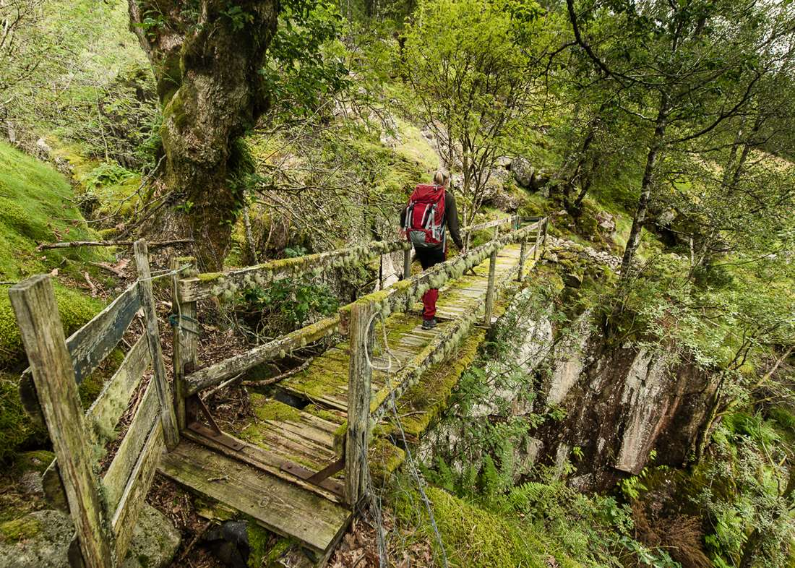
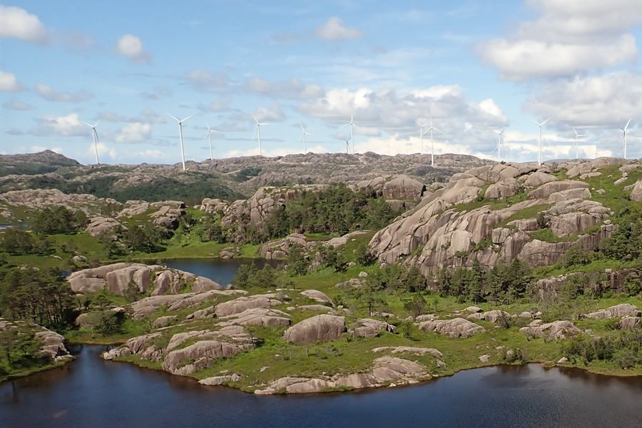
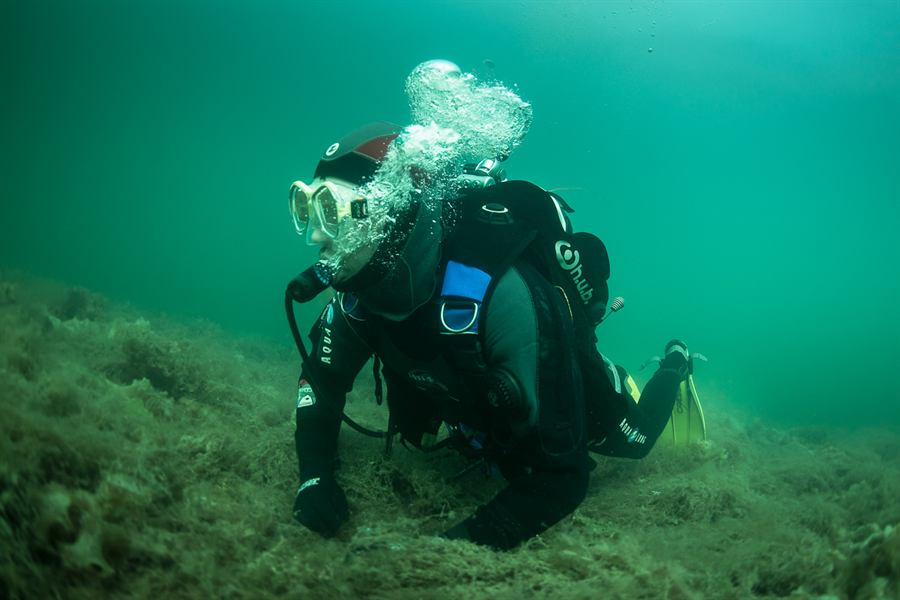
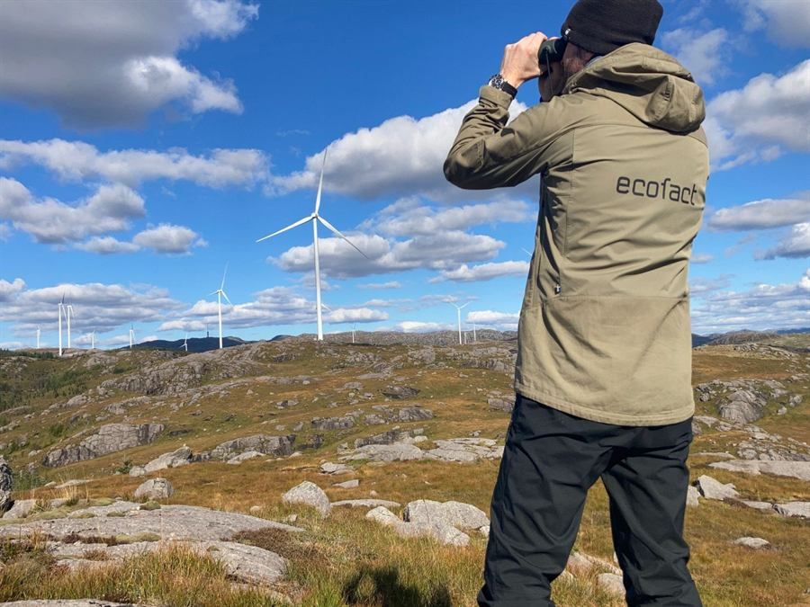

Miljøfaglig rådgivning · Sandnes og Moss
Vi kartlegger naturen før planene vedtas.
Ecofact er et uavhengig miljøfaglig rådgivningsselskap med kontor i Sandnes og i Moss som tilbyr tjenester til kunder i hele landet.

2008
Etablert, ifølge Enhetsregisteret
2
Kontorer: Sandnes og Moss
9
Fagområder på tjenestesiden
ISO 9001
Sertifisert ledelsessystem
Utvalgte oppdrag
Fra Svalbard til Stavangerhalvøya.
Ecofacts oppdrag spenner fra rene kartleggingsoppgaver for det offentlige til store konsekvensutredninger med reguleringsplaner for private aktører.

| Kunde | Oppdrag | År | Bidrag |
|---|---|---|---|
| Miljødirektoratet | Naturkartlegging etter NiN | 2015–2026 | Miljøfaglig kompetanse |
| Flere vindkraftaktører | Trekkende rovfugl i vindkraftverk | 2011–2014, 2021–2026 | Forskning og overvåking |
| Lyse Kraft AS | Ungfiskundersøkelse Årdalsvassdraget | 2014–2024 | Vassdragstiltak |
| Farsund kommune | Miljøundersøkelser Lundevågen | 2016, 2022–2023 | Miljøfaglig kompetanse |
| Kvithei utbyggingsselskap KS | Kvithei boligområde | 2012–2015 | Planlegging |
| Vial AS | North Sea Energy Park | 2020–2021 | Planlegging |
Listen er hentet fra oppdragene Ecofact viser på forsiden sin.
Tjenester
Ni fagområder under samme tak.
Ecofact har kompetanse og lang erfaring innen botanikk, zoologi, økologi, ferskvann, elveøkologi, marinbiologi, overvannshåndtering, grunnforurensing, arkeologi samt nærmiljø og friluftsliv.
-
01
Naturkartlegging
Sentral aktør i naturkartlegging, blant annet etter NiN.
-
02
Konsekvensutredning
Alle typer arealplaner, fra små reguleringer til kommune- og fylkesplaner.
-
03
Forurensning
Undersøkelser i sjø, på land og i ferskvann, etter Miljødirektoratets veiledere.
-
04
Vassdragstiltak
Prosjektering av renseparker, fangdamssystemer og biotopforbedrende tiltak.
-
05
Ferskvann og fisk
Rådgivning som bygger på kunnskap om vannmiljø, fysisk, kjemisk og biologisk.
-
06
Skjøtsel og forvaltning
Praktisk miljøforvaltning, i prosjekter som resulterer i tiltak.
-
07
Marinbiologi
Kartlegging av marine naturtyper på detaljert nivå.
-
08
Arkeologi
Utredninger om kulturminner og kulturmiljø, med erfaren arkeolog tilknyttet.
-
09
Forskning og overvåking
Forsknings- og overvåkingsprosjekter, også sammen med universitetsmiljøene.

Vann og miljø
Fra småbåthavn til havn.
Ecofact har bygget opp kompetanse på kartlegging og overvåking av forurensede miljøer, og har gjennomført undersøkelser i områder som spenner fra mindre småbåthavner til større havneområder.
Undersøkelsene gjøres etter Miljødirektoratets veiledere TA 2802 og TA 2229. I 2024 har Ecofact ansvaret for overvåking av kystvannet rundt Stavangerhalvøya, og analysene utføres av akkreditert laboratorium.
- TA 2802
- TA 2229
- TA-2553
- Akkreditert laboratorium
Slik jobber vi
Tre steg fra første samtale til vedtak.
-
01
Involver oss tidlig
Mange kunder involverer oss tidlig i prosessen for å sikre en god tilpasning til natur, landskap og samfunnsinteresser.
-
02
Kartlegging og utredning
Vi kartlegger i felt og utreder etter gjeldende veiledere. Analysene gjøres av akkreditert laboratorium.
-
03
Fram til vedtak
Vi kan lede arbeidet fra oppstartsmøte, via planprogram og konsekvensutredning, til innlevering av planforslag og vedtak.

Ecofacts målsetting
Vi skal være den foretrukne partneren i løsning av miljøfaglige problemstillinger.
Fagfolk
Et bredt fagmiljø, i Sandnes og Moss.
Ecofact er fast leverandør av artsdata til Artsdatabanken, og samarbeider med NMBU, Norsk Polarinstituttet, UiT, NIBIO, NINA og UNIS.
-
Ledelsen
Ole Kristian Larsen
Daglig leder, marinbiolog
+47 481 27 870 ole@ecofact.no -
Kontoret
Nadine Feldt de Urrutia
Kontormedarbeider, logistikk
+47 913 16 256 nadine@ecofact.no -
Vann og miljø
Hans Olav Sømme
Seksjonsleder, marinbiolog
+47 473 30 413 hans@ecofact.no -
Vegetasjon
Knut Børge Strøm
Seksjonsleder, utmarksforvalter
+47 412 78 567 knut@ecofact.no -
Vilt
Roy Mangersnes
Seksjonsleder, salgsansvarlig, økolog
+47 911 34 022 roy@ecofact.no -
Moss
Sigrid Skrivervik Bruvoll
Miljørådgiver, biolog
+47 984 76 309 sigrid@ecofact.no
Forespørsel
Beskriv oppdraget — vi tar det derfra.
Tre korte steg. Du får en kvittering du kan sende som e-post, med opplysningene ferdig utfylt.
Kvittering
Forespørselen er klar
Saksnummer —
Ingenting er sendt. Knappen åpner et e-postutkast i din egen klient, med opplysningene fylt inn.